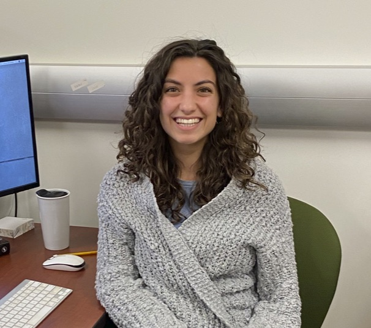

<!DOCTYPE html>
<html>
  <head>
    <title>Olivia Bernstein Morgan | UC Irvine</title>
    <link rel="stylesheet" type="text/css" href="stylesheet.css" />
  </head>
</html>


<body>
    
<header>
    <h3><a href="./CVBernsteinMorgan.pdf">CV</a></h3>
    <h3><a href="https://github.com/oliviabern">GitHub</a></h3>
    <h3><a href="https://www.linkedin.com/in/oliviabernstein/">LinkedIn</a></h3>
    <h3><a href="https://twitter.com/liviabern">Twitter</a></h3>
    <h3><a href="https://scholar.google.com/citations?user=_SrVjUcAAAAJ&hl=en">Google Scholar</a></h3>
</header>


<div class="container">
  <div class="column left">
    <h1>Olivia Bernstein Morgan</h1>
    
    <h2>Email: <a href="mailto:obernste@uci.edu">obernste@uci.edu</a><br></h2>
  </div>
  <div class="column right">
      <br>
      <p>Olivia Bernstein Morgan is PhD candidate in statistics at UC Irvine working in the lab of <a href="https://dgillen.ics.uci.edu/">Dr. Daniel Gillen</a>. She is an NSF graduate research fellow and ARCS fellow. Her research is focused on prediction assessment under biased sampling with a focus on improving public health predictions and interventions, particularly in the area of Alzheimer’s Disease.</p>
      <h3>Publications</h3>
      <p>Bernstein, OM; Vegetabile, BG; Salazar, CR; Grill, JD; Gillen, DL. <a href="https://link.springer.com/article/10.1007/s10742-022-00283-x">“Adjustment for Biased Sampling Using NHANES Derived Propensity Weights.”</a>  <i>Health Services and Outcomes Research Methodology.</i> 2022.</p>
      <p>Lewis, CK; Bernstein, OM; Grill, JD; Gillen, DL; Sultzer, DL. <a href="https://link.springer.com/article/10.14283/jpad.2022.13">“Anxiety and depressive symptoms and cortical amyloid-β burden in cognitively unimpaired older adults.”</a>  <i>The Journal of Prevention of
Alzheimer's Disease.</i> 2022.</p>
      <p>Bernstein, OM; Grill, JD; Gillen, DL. <a href="https://alzres.biomedcentral.com/articles/10.1186/s13195-020-00762-8">“Recruitment and retention of participant and study partner dyads in two multinational Alzheimer’s disease registration trials.”</a>  <i>Alzheimer’s Research & Therapy.</i> 2021.</p>
      <p>Witbracht, MG; Bernstein, OM; Lin, V; Salazar, CR; Sajjadi, SA; Hoang, D; Cox, CG; Gillen, DL; Grill, JD. <a href="https://www.frontiersin.org/articles/10.3389/fmed.2020.00493/full">“Education and message framing increase willingness to undergo research lumbar puncture: A randomized controlled trial.”</a>  <i>Frontiers in Geriatric Medicine.</i> 2020.</p>
      <p>Wiens, AE; Copan, AV; Rossomme, EC; Aroeira, GJR.; Bernstein, OM; Agarwal, J; Schaefer, HF.<a href="https://aip.scitation.org/doi/10.1063/1.5004984"> “Reinterpreting the infrared spectrum of H + HCN: Methylene amidogen radical and its coproducts.”</a>  <i>The Journal of Chemical Physics.</i> 2018.</p>
      <p>Bernstein, OM; McGee, TE; Silzel, LE; Silzel, JW. <a href="https://doi.org/10.1016/j.saa.2017.07.060">“Fluorescent pseudorotaxanes of a quinodicarbocyanine dye with gamma cyclodextrin.”</a>  <i>Spectrochimica Acta Part A: Molecular and Biomolecular Spectroscopy.</i> 2018.</p>
      <br>
      <p>*Publications prior to 2022 are under "Olivia M. Bernstein" but future publications will be under "Olivia Bernstein Morgan"</p>
  </div>
</div>
    
    
 </div>

</body>
